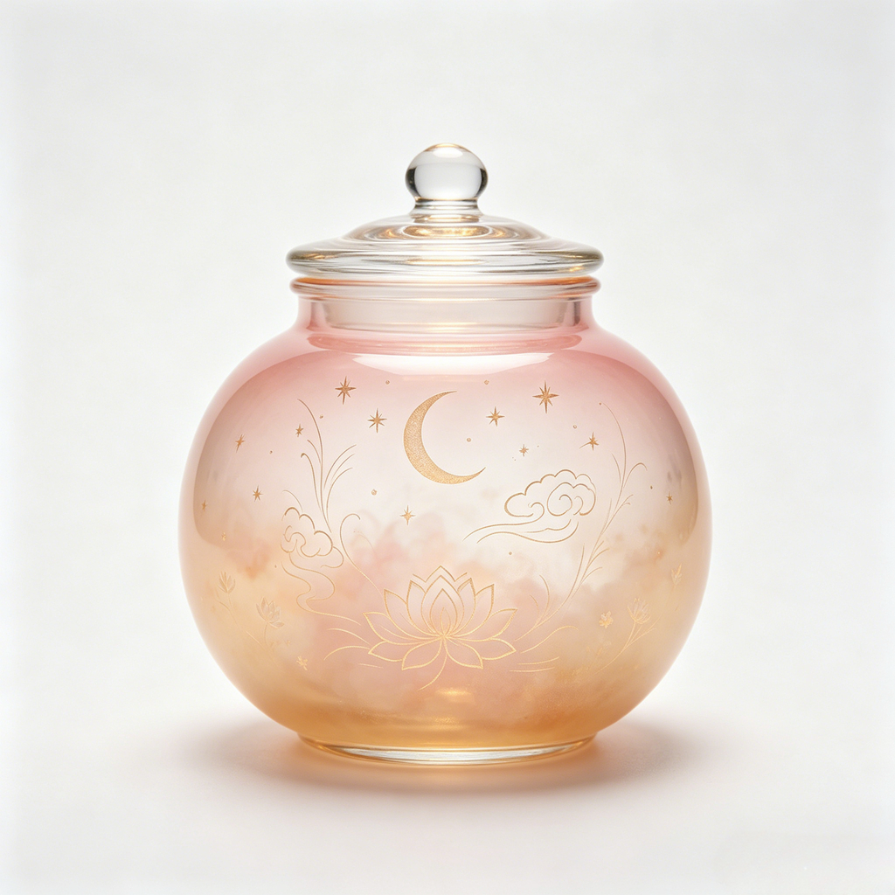

最后更新：2026 年 7 月 2 日
拾梦日记（以下简称"本 App"）是一款梦记录 App，让你把梦以文字或语音的形式保存下来，配上贴纸、水晶罐或瓷器罐皮肤，按月份归档，随时回看。本政策说明我们如何处理你的信息。
本 App 不收集任何个人数据。
本 App 在你的设备上存储以下数据以提供功能：
| 数据类型 | 用途 | 存储位置 |
|---|---|---|
| 梦文字内容（每条 ≤ 2000 字） | 展示和检索你的梦 | 仅本地（SwiftData 存储） |
| 语音录音（.m4a，每条最长 60 秒） | 播放语音梦 | 仅本地（App 沙盒） |
| 添加到梦里的照片（PNG，每条最多 3 张） | 为梦附上记忆 | 仅本地（App 沙盒） |
| 皮肤和贴纸选择（字符串 ID） | 渲染罐子外观 | 仅本地（SwiftData 存储） |
| 本地语音识别（可选） | 把口述的梦转成文字 | 设备本地处理，音频不离开设备 |
所有数据处理都在你的设备本地完成，不上传到任何服务器。
| 权限 | 用途 | 是否必需 |
|---|---|---|
| 麦克风 | 当你选择录制语音梦时录音 | 可选 — 只在你点击录音按钮时请求 |
| 语音识别 | 把口述的梦转成文字（iOS 设备端识别器） | 可选 — 只在你选择语音转文字时请求 |
| 照片库（通过 PhotosPicker） | 给梦添加照片 | 可选 — 只在你点击添加照片按钮时请求 |
权限仅在你要使用对应功能的那一刻才请求，你可以拒绝任何一项而不影响其他功能。
本 App 不使用任何第三方服务，包括：
唯一的外部交互是 Apple 的 StoreKit，用于处理 App 内购买，全程由 Apple 直接处理。详见第六节。
拾梦日记提供一次性、非消耗型购买（"永久完整版解锁"），解锁全部罐子皮肤（瓷器罐和部分水晶罐）。购买流程和账单完全由 Apple 通过你的 Apple ID 处理。
你的所有梦数据都只存在于你的设备上：
因为我们的服务器上没有你的任何数据，我们无法远程检索、恢复或删除你的数据 — 这是出于隐私保护的设计。
本 App 不针对 13 岁以下儿童，也不有意收集儿童信息。由于我们不收集任何数据，不触发儿童隐私特别保护条款。
由于拾梦日记不收集或处理任何个人数据，GDPR（欧盟）、英国 GDPR、CCPA 等数据权利条款在你身上不会产生可执行的数据。但你拥有完全控制权：
不发生跨境传输，因为没有数据离开你的设备。唯一的网络通信是与 Apple 的 StoreKit 服务器验证购买，该过程受 Apple 自身的隐私政策约束。
你的梦数据由 iOS 内置的沙盒隔离保护。本 App 不能访问其他 App 的数据，其他 App 也不能访问你的梦数据。我们没有额外加密，因为操作系统级沙盒是 iOS 上最强的保护。
我们可能不时更新本隐私政策。任何变更会发布在本页面并更新"最后更新"日期。变更后继续使用 App 即视为接受。
如果你对本隐私政策或你的数据有疑问，请联系我们：
欧盟用户可在邮件标题中加上"EU Privacy Inquiry"，我们会优先处理。